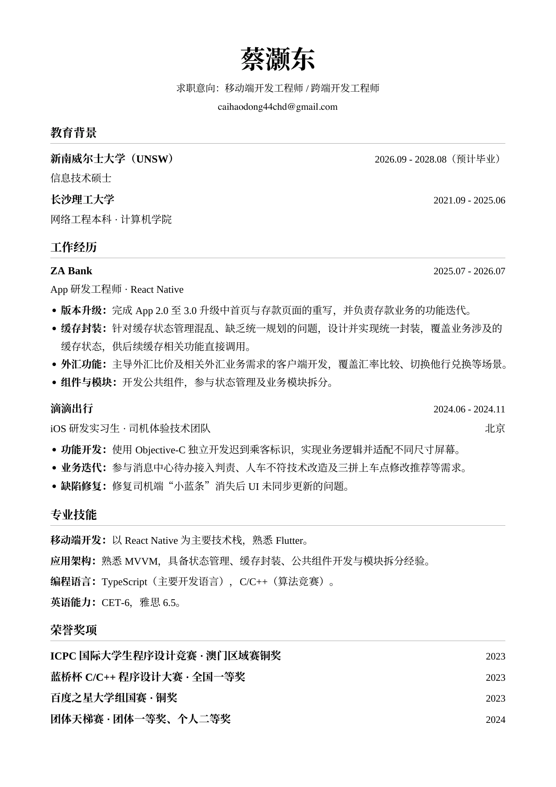

ABOUT ME
你好，我是 Jefferson。
我正在 UNSW 读 IT 一年级，学习人工智能。
喜欢借助 AI 与代码，把日常需要和动漫灵感做成小工具、桌宠、网页游戏与像素视频，在实际项目里边学边做。
AI 协作 · 边学边做
SELECTED WORK
把想法，做成作品。
实用的小工具、好玩的网页，和喜欢的动漫世界。
好友牌桌 · 网页小游戏
浏览器里的德扑练习项目，探索好友房、单人 AI 与牌局记录。仅使用虚拟筹码。
JavaScriptNode.jsSQLite
在本地开发与迭代
像素格斗 MV
把动漫对决做成街机风格短片，尝试像素角色、分镜与音乐卡点；包括五条悟对伏黑甚尔的创作实验。
PythonPillowPixel Art
代码渲染 · 本地视频作品
这些项目都在边做边学，也都有 AI 协作的参与。
MY TOOLBOX
边学边做的工具箱。
在这些项目里接触和使用的技术。
网页与小游戏
桌面与小工具
图像与动画
MY RESUME
更多关于我的经历。
教育背景、工作经历与技术积累，整理在这一页。

可滚动查看整页；打开 PDF 后可放大阅读。中 / EN 会同步切换简历语言。
BEYOND THE SCREEN
代码之外，也有热爱。
足球
FOOTBALL游戏
GAMING台球
BILLIARDS动漫
ANIME喜欢的动漫
- 蓝色监狱
- 进击的巨人
- 海贼王
- EVA
- 咒术回战
- 碧蓝之海
- 名侦探柯南
SAY HELLO
很高兴，在这里遇见你。
聊聊游戏、网页，或者只是打个招呼。
给我写封邮件